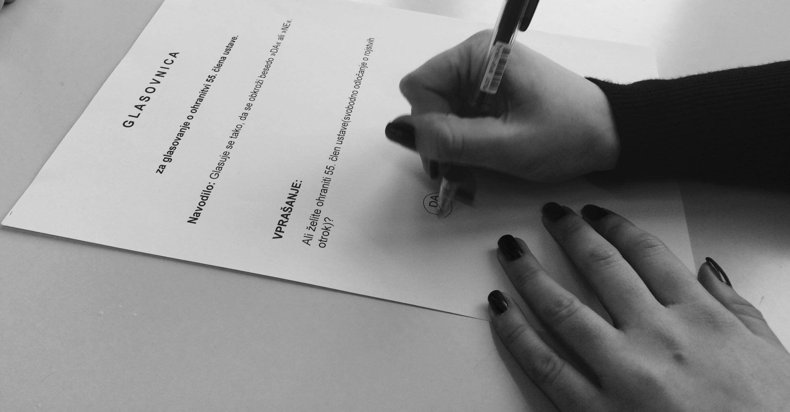

Leta 1990 je slovenski establišment izdal dokument »Podlaga prebivalstvene politike Slovenije«, v katerem so želeli odpraviti pravico do splava, izpuščene so bile pobude, ki so zadevale spolno diskriminacijo in spolno usmerjenost. Feministke so začele kampanjo proti politiki, ki je vodila v ponovno tradicionalizacijo spolnih vlog. Skupina Ženske za politiko je dala pobudo za množične demonstracije, saj bi z 11% poslank v državnem zboru ustavo izglasovali brez 55. člena. Nastala je koalicija »Za izbiro«, ki je začela zbirati podpise pod izjavo, ki je bila naslovljena na Ustavno komisijo in politike. 11.12.1991 je prišlo do demonstracije, ki je skupaj s kampanjo dosegla zmago z grenkim priokusom, saj je bil dosežen kompromis.
